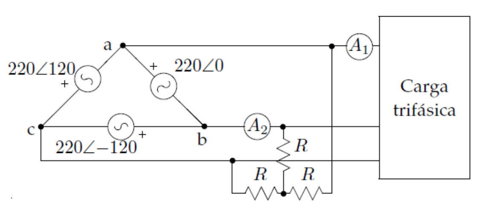

Potencia instantánea trifásica
5cm
5cm \[\begin{equation*} \begin{split} u_1(t)&=\sqrt{2}U_F\cos(\omega t)\\ i_1(t)&=\sqrt{2}I_F\cos(\omega t-\varphi)\\ \\ u_2(t)&=\sqrt{2}U_F\cos(\omega t-120^\circ)\\ i_2(t)&=\sqrt{2}I_F\cos(\omega t-120^\circ-\varphi)\\ \\ u_3(t)&=\sqrt{2}U_F\cos(\omega t+120^\circ)\\ i_3(t)&=\sqrt{2}I_F\cos(\omega t+120^\circ-\varphi) \end{split} \end{equation*}\]
\[\begin{equation*} p(t)=\underbrace{u_1(t)\cdot i_1(t)}_{p_1(t)}+\underbrace{u_2(t)\cdot i_2(t)}_{p_2(t)}+\underbrace{u_3(t)\cdot i_3(t)}_{p_3(t)}=3U_FI_F\cos \varphi \end{equation*}\]
Potencia instantánea \[\begin{equation*} \boxed{p(t)=3U_FI_F\cos \varphi} \end{equation*}\]
La potencia instantánea total de un sistema trifásico equilibrado es constante, no apareciendo términos fluctuantes. Esto conlleva beneficios como disminución de vibraciones, ruido y fatiga en las máquinas eléctricas rotativas.
Si el sistema no está equilibrado, la potencia instantánea contendrá en general términos fluctuantes.
Si bien los términos fluctuantes se cancelan entre sí, ello no evita que exista un intercambio de potencia reactiva entre cada una de las fases y el circuito exterior (puede existir un desfase entre la tensión e intensidad de cada fase).
Potencia activa trifásica En términos de las magnitudes de fase: \[\begin{equation*} \boxed{P=\frac{1}{T}\int^{T}_0 p(t) dt=3 U_F I_F\cos \varphi} \end{equation*}\]
En términos de las magnitudes de línea: \[\begin{equation*} \left. \begin{split} \text{Conexión en estrella:} & \ U_F=\frac{U_L}{\sqrt{3}} \ ; \ I_F=I_L\\ \text{Conexión en triángulo:} & \ U_F=U_L \ ; \ I_F=\frac{I_L}{\sqrt{3}} \end{split}\right\} \ \ \Rightarrow \ \ \boxed{P=\sqrt{3} U_L I_L\cos \varphi} \end{equation*}\]
El ángulo \(\varphi\) es el desfase entre las correspondientes tensiones e intensidades de fase (en un sistema equilibrado, las tres fases tienen el mismo desfase).
Potencia reactiva trifásica Definida como la suma de las potencias reactivas en cada fase. En términos de las magnitudes de fase: \[\begin{equation*} \boxed{Q=3 U_F I_F\sin \varphi} \end{equation*}\]
En términos de las magnitudes de línea: \[\begin{equation*} \left. \begin{split} \text{Conexión en estrella:} & \ U_F=\frac{U_L}{\sqrt{3}} \ ; \ I_F=I_L\\ \text{Conexión en triángulo:} & \ U_F=U_L \ ; \ I_F=\frac{I_L}{\sqrt{3}} \end{split}\right\} \ \ \Rightarrow \ \ \boxed{Q=\sqrt{3} U_L I_L\sin \varphi} \end{equation*}\]
El ángulo \(\varphi\) es el desfase entre las correspondientes tensiones e intensidades de fase (en un sistema equilibrado, las tres fases tienen el mismo desfase).
Potencia compleja y aparente en sistemas trifásicos tiene una expresión análoga a la vista para circuitos monofásicos. \[\begin{equation*} \boxed{\mathcal{S}=3\cdot \mathcal{S}_F=3\cdot \mathcal{U}_{F}\mathcal{I}^*_{F}=\sqrt{3}\cdot \mathcal{U}_{L}\mathcal{I}^*_{L}=P+jQ } \end{equation*}\]
se corresponde con el módulo de la potencia compleja. \[\begin{equation*} \boxed{{S}=|\mathcal{S}|=3\cdot {U}_{F}{I}_F=\sqrt{3}\cdot {U}_{L} {I}_L=\sqrt{P^2+Q^2}} \end{equation*}\]
Ejercicio 10.1 La carga trifásica de la figura no consume potencia reactiva y su potencia aparente es 25 kVA. Sabiendo que \(R=\frac{1}{\sqrt{3}} \, \mathrm{\Omega}\), determinar las lecturas de los amperímetros.

Solución: \(A_1=65,608\) A; \(A_2=285,608\) A
Al igual que en circuitos monofásicos, el factor de potencia se define como el cociente entre la potencia activa y la potencia aparente: \[\begin{equation*} \boxed{\text{fdp}=\frac{P}{S}=\frac{P}{\sqrt{P^2+Q^2}}=\frac{\sqrt{3}\cdot U_L I_L\cos \varphi}{\sqrt{3}\cdot U_L I_L}=\cos \varphi} \end{equation*}\]
El factor de potencia NO da información sobre el signo de la potencia reactiva. Es necesario indicar el carácter inductivo o capacitivo.
Capacidad de los condensadores conectados en estrella
Capacidad de los condensadores conectados en triángulo
Ejercicio 10.2
Determinar la capacidad de los condensadores a conectar en triángulo para que el factor de potencia del conjunto sea de 0.9 inductivo, así como la potencia reactiva inyectada por estos al sistema, sabiendo que las potencias absorbidas por las cargas son las siguientes: \(P_1\) = 400 W, \(Q_1\) = 200 var, \(P_2\)=400 W, \(Q_2\) = 400 var. La frecuencia del sistema es \(f = 50\) Hz.
Solución: \(C=1,562 \, \mathrm{\mu F}\); \(Q_c=212,54\) var
Medida de potencia activa en sistemas con neutro accesible
\[\begin{equation*} W=U_{RN}\cdot I_R\cdot \cos(\widehat{\mathcal{U}_{RN},\mathcal{I}_R})=U_F\cdot I_F\cdot \cos \varphi=\frac{P}{3} \ \ \Rightarrow \ \ \boxed{P=3\cdot W} \end{equation*}\]
Método de los dos vatímetros
Solo se considerará el desarrollo para secuencia directa.
Medida de potencia reactiva con un vatímetro
Solo se considerará el desarrollo para secuencia directa.
\[\begin{equation*} W=U_{ST}\cdot I_R\cdot \cos(\widehat{\mathcal{U}_{ST},\mathcal{I}_R})=U_{ST}\cdot I_{R}\cdot \cos(90^\circ-\varphi)=U_{L}\cdot I_{L}\cdot \sin \varphi=\frac{Q}{\sqrt{3}} \end{equation*}\] \[\begin{equation*} \boxed{Q=\sqrt{3}\cdot W} \end{equation*}\]
Ejercicio 10.3 En el sistema de la figura, equilibrado y de secuencia directa, se conocen las lecturas de los dos vatímetros, \(W_1 =200\) y \(W_2=100\), así como las potencias activa y reactiva consumidas por la carga 1, \(P_1=250\) W y \(Q_1=100\) var. Encontrar la potencia compleja consumida por la carga 2.
Solución: \(\mathcal{S}_2= 50 + j73,21\) VA